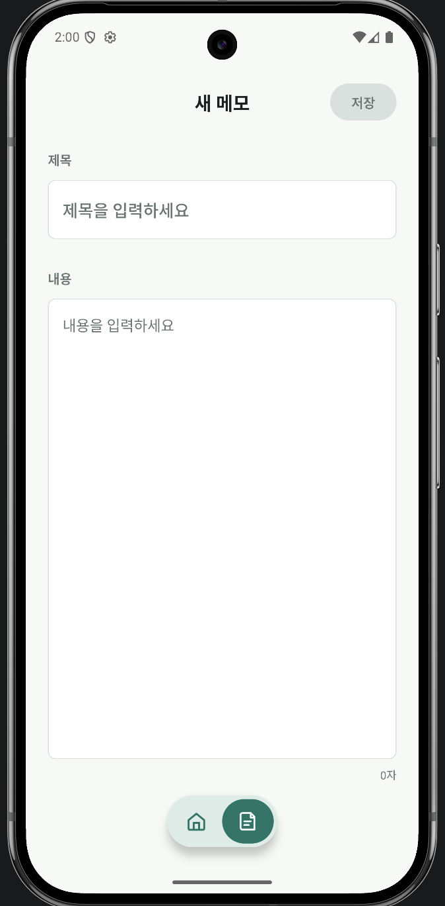
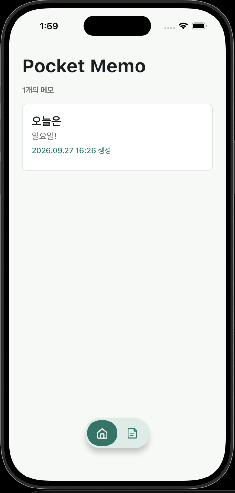

ANDROID · iOS
BookSearch
카카오 도서 검색으로 책을 찾고 상세 정보를 확인합니다. Kotlin으로 로직을 공유하고, 화면은 Jetpack Compose와 SwiftUI로 각각 구현했습니다.
GitHub에서 BookSearch 보기ANDROID DEVELOPER
Android를 중심으로
iOS와 KMP까지 개발합니다.
사용자가 보는 화면부터 데이터가 흐르는 방식까지 고민합니다. Android·iOS 앱을 개발하고 운영한 경험을 바탕으로, 플랫폼 간 코드 공유를 실험하고 있습니다.
SELECTED WORK
검색, 로컬 저장, 갤러리에서 서로 다른 모바일 구현 방식을 실험했습니다.
ANDROID · iOS
카카오 도서 검색으로 책을 찾고 상세 정보를 확인합니다. Kotlin으로 로직을 공유하고, 화면은 Jetpack Compose와 SwiftUI로 각각 구현했습니다.
GitHub에서 BookSearch 보기

ANDROID · iOS
메모를 작성, 편집, 삭제하는 앱입니다. Android와 iOS에서 같은 Compose UI를 사용하고, 메모는 각 기기의 로컬 데이터베이스에 저장합니다.
GitHub에서 KMPMemo 보기iOS
사진작가를 선택하면 사진을 높이가 다른 2열 갤러리에서 탐색하고, 원하는 이미지를 확대해 볼 수 있습니다.
GitHub에서 Photographers 보기ANDROID
GitHub 저장소를 검색하고 상세 정보를 확인하는 앱입니다. 검색 입력을 디바운스하고 Paging 3로 결과를 이어서 불러옵니다.
GitHub에서 SearchRepo 보기EXPERIENCE
Android · iOS 앱 개발 및 유지보수
SI 프로젝트 Android 개발
GITHUB LABS
작은 실습은 주제별 저장소에 모아 두었습니다.